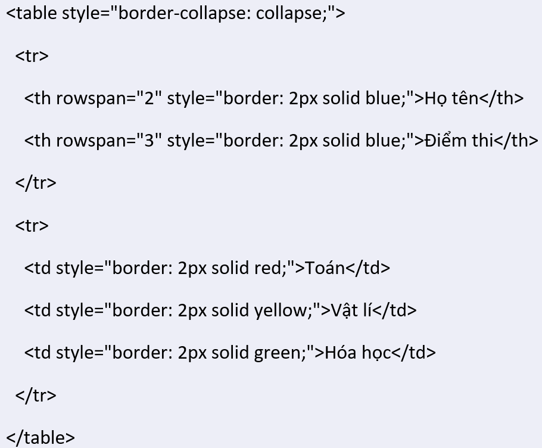

Câu hỏi
Sửa lại chương trình trong Hình 9.6a, sử dụng thuộc tính Style thay vì thuộc tính border để tạo viền cho bảng. Sử dụng màu xanh cho viền của ô hai dòng đầu bảng và sử dụng 3 màu đỏ, vàng, xanh cho ba chữ Toán, Vật lý và Hóa học
Câu trả lời
| Họ tên | Điểm thi | |
|---|---|---|
| Toán | Vật lí | Hóa học |